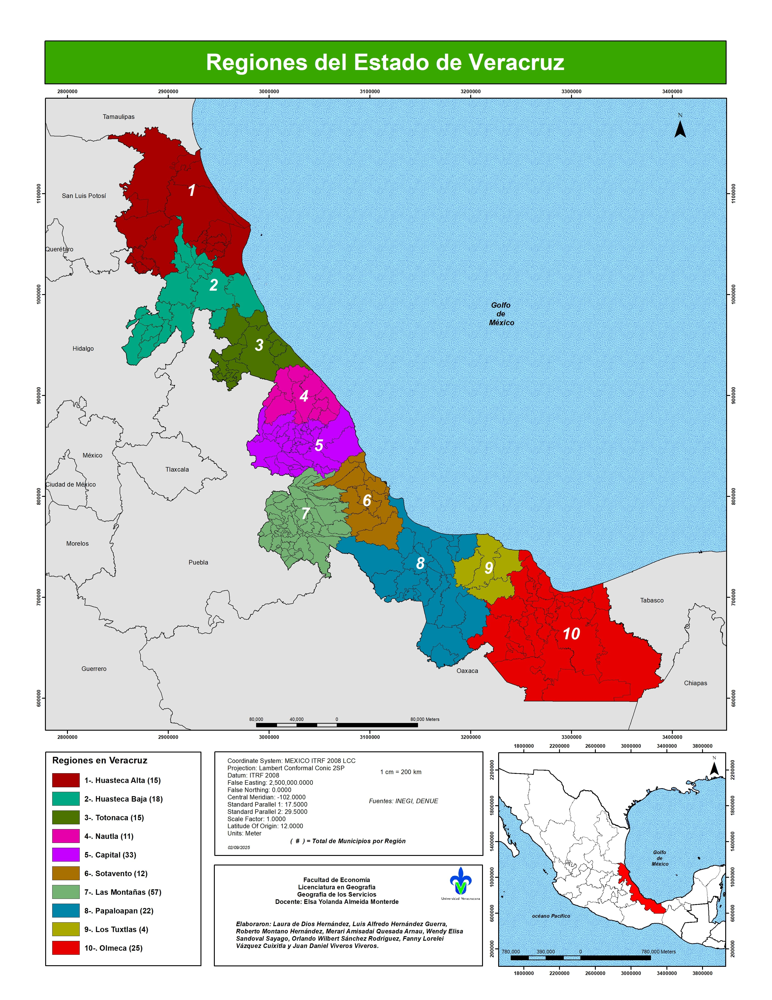

Panorama Nacional
Distribución total de servicios a nivel nacional (INEGI · DENUE)
Transportes, correos y almacenamientos
Alojamiento temporal y alimentos
Servicios educativos
Salud y asistencia social
Esparcimiento y cultura
Panorama Estatal (Veracruz)
Distribución de servicios en el estado (INEGI · DENUE)
Transportes
Alojamiento y alimentos
Educativos
Salud
Cultura y deportes
Regiones de Veracruz
Huasteca Alta (15 municipios)
Ubicada al norte del estado, en la cuenca del río Tuxpan. Es una región de clima cálido-húmedo, abundantes cuerpos de agua y vegetación tropical. Su economía se basa en la agricultura (cítricos, maíz), ganadería y la industria petrolera. Culturalmente, mantiene fuerte presencia indígena náhuatl y una tradición musical rica en huapangos.
Localización: Norte del estado.
Municipios importantes: Tantoyuca, Tempoal, Platón Sánchez, El Higo, Chicontepec.
Economía: Agricultura (cítricos, maíz), ganadería, petróleo.
Atractivos: Fiesta de Xantolo, Zona Arqueológica Castillo de Teayo.
Gastronomía: Zacahuil, bocoles, enchiladas huastecas.
Huasteca Baja (18 municipios)
Situada al noreste del estado, en torno al río Pánuco. Presenta llanuras costeras, pantanos y áreas agrícolas. La pesca, la agricultura de caña de azúcar y la ganadería son actividades esenciales. Destaca por su herencia huasteca, danzas tradicionales y gastronomía a base de mariscos y productos del río.
Localización: Norte del estado, al sur de la Huasteca Alta.
Municipios importantes: Pánuco, Pueblo Viejo, Ozuluama, Álamo Temapache, Tuxpan.
Economía: Pesca, caña de azúcar, ganadería, petróleo.
Atractivos: Playas de Tuxpan, Laguna de Tamiahua.
Gastronomía: Mariscos, acamayas, tamales de cazuela.
Totonaca (15 municipios)
Análisis por: Fanny Lorelei Vasquez Cuixtla
Región del centro-norte, comprendida principalmente por Papantla y su entorno. Es una zona de selvas medianas y tierras productivas. Famosa por su producción de vainilla, su cultura totonaca, la Ceremonia de los Voladores y el sitio arqueológico de El Tajín. Tiene un importante desarrollo turístico y artesanal.
Localización: Zona norte-centro.
Municipios importantes: Papantla, Poza Rica, Coatzintla, Tihuatlán, Cazones de Herrera.
Economía: Vainilla, petróleo, turismo, artesanías.
Atractivos: El Tajín, Voladores de Papantla, Cumbre Tajín.
Gastronomía: Mole de Xico, tamales, vainilla.
Nautla (11 municipios)
Análisis por: Luis Alfredo Hernández Guerra
Ubicada en la franja costera central, caracterizada por playas, esteros y llanuras agrícolas. La región destaca por su producción de caña, cítricos y ganadería. El turismo de playa y los humedales son elementos importantes. Su identidad cultural combina tradiciones mestizas con elementos totonacos.
Localización: Costa centro-norte.
Municipios importantes: Martínez de la Torre, San Rafael, Misantla, Tlapacoyan, Vega de la Torre.
Economía: Cítricos (limón, naranja), caña, ganadería.
Atractivos: Costa Esmeralda, Rápidos de Filobobos.
Gastronomía: Mariscos, ceviche, antojitos regionales.
Capital (33 municipios)
Análisis por: Juan Daniel Viveros Viveros
Región central montañosa donde se concentra la capital, Xalapa. Cuenta con clima templado-húmedo, bosques de niebla y un fuerte desarrollo urbano, educativo y administrativo. Es el centro político y cultural del estado, con universidades, museos y una economía basada en servicios, comercio y educación.
Localización: Centro del estado (zona montañosa).
Municipios importantes: Xalapa, Coatepec, Emiliano Zapata, Banderilla, Xico.
Economía: Gobierno, educación, café, servicios.
Atractivos: Museo de Antropología, Coatepec y Xico (Pueblos Mágicos).
Gastronomía: Café de altura, mole xiqueño, chiles rellenos.
Sotavento (12 municipios)
Ubicada en la planicie del centro-sur, con clima cálido-seco y extensas áreas de agricultura y ganadería. Famosa por el son jarocho, la décima y la tradición musical de arpa y jarana. Su actividad económica se centra en la caña de azúcar, ganadería y comercio regional.
Localización: Costa central.
Municipios importantes: Veracruz, Boca del Río, Medellín, La Antigua, Alvarado.
Economía: Puerto, turismo, comercio, pesca.
Atractivos: San Juan de Ulúa, Acuario, Carnaval, Malecón.
Gastronomía: Arroz a la tumbada, café lechero, picadas.
Altas Montañas (57 municipios)
Análisis por: Merari Amisadai Quesada Arnau
Compuesta por municipios serranos como Orizaba, Córdoba y Zongolica. Predominan montañas elevadas, climas templados y fríos, y bosques de altura. Es una región cafetalera por excelencia, además de ser industrial y comercial. Culturalmente destaca por su población nahua y su herencia colonial.
Localización: Zona centro-oeste (montañosa).
Municipios importantes: Orizaba, Córdoba, Nogales, Río Blanco, Fortín.
Economía: Café, industria cervecera y textil, comercio.
Atractivos: Pico de Orizaba, Teleférico, Cascada de Texolo.
Gastronomía: Café de olla, pan de Córdoba, tlatonile.
Papaloapan (22 municipios)
Análisis por: Laura de Dios Hernández
Situada en la cuenca baja del río Papaloapan, una de las más grandes del país. Es una región de humedales, ríos majestuosos y suelos fértiles. Destaca en agricultura (arroz, caña, maíz), pesca y ganadería. Tiene una identidad cultural afro mestiza notable, especialmente en municipios como Tlacotalpan.
Localización: Sur del estado (cuenca del Papaloapan).
Municipios importantes: Cosamaloapan, Tierra Blanca, Tres Valles, Isla, Playa Vicente.
Economía: Arroz, caña, piña, ganadería, pesca.
Atractivos: Tlacotalpan (Patrimonio UNESCO), Río Papaloapan.
Gastronomía: Toritos, minilla, arroz con mariscos.
Los Tuxtlas (4 municipios)
Análisis por: Wendy Elisa Sandoval Sayago
Región selvática del sur-centro, con una de las reservas naturales más importantes del país. Montañas volcánicas, lagunas y playas caracterizan su geografía. Es rica en biodiversidad y tiene fuerte tradición indígena popoluca y náhuatl. Su economía combina agricultura, pesca, ecoturismo y productos como tabaco y café.
Localización: Sureste (sierra de los Tuxtlas).
Municipios importantes: San Andrés Tuxtla, Santiago Tuxtla, Catemaco, Hueyapan de Ocampo.
Economía: Tabaco, ecoturismo, pesca, ganadería.
Atractivos: Laguna de Catemaco, Salto de Eyipantla, Reserva de la Biosfera.
Gastronomía: Tegogolo, carne de chango, mojarras.
Olmeca (25 municipios)
Ubicada al extremo sur del estado, colindante con Tabasco y Oaxaca. Es una zona de industria petrolera, puertos (Coatzacoalcos) y corredores logísticos. Su geografía presenta llanuras costeras y zonas pantanosas. Tiene influencia cultural olmeca en su historia y gran diversidad económica: industria, comercio, energía y pesca.
Localización: Extremo sur del estado.
Municipios importantes: Coatzacoalcos, Minatitlán, Cosoleacaque, Las Choapas, Agua Dulce.
Economía: Petroquímica, refinación, puertos, comercio.
Atractivos: Museo Olmeca, Parque Jaguaroundi, playas.
Gastronomía: Pejelagarto, chirmol, tamales de chipilín.
Mapa de las Regiones de Veracruz

Merari Amisadai Quesada Arnau, Wendy Elisa Sandoval Sayago,
Fanny Lorelei Vasquez Cuixtla y Juan Daniel Viveros Viveros.